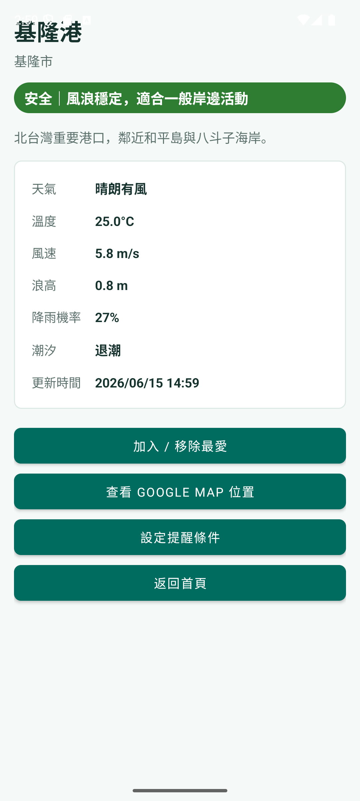
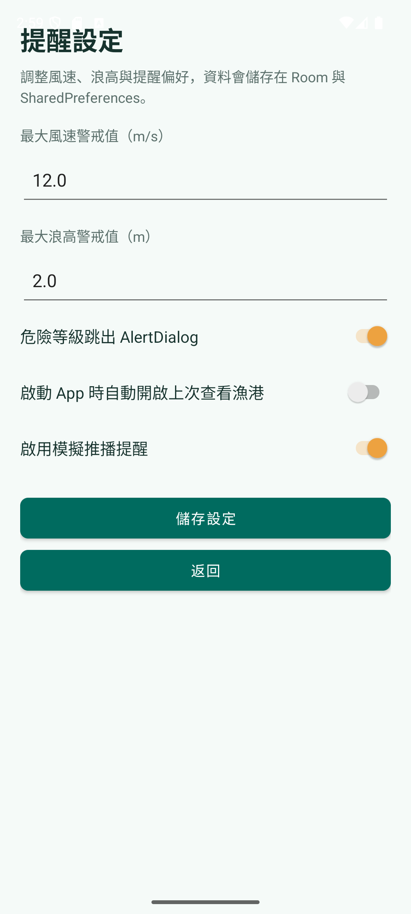
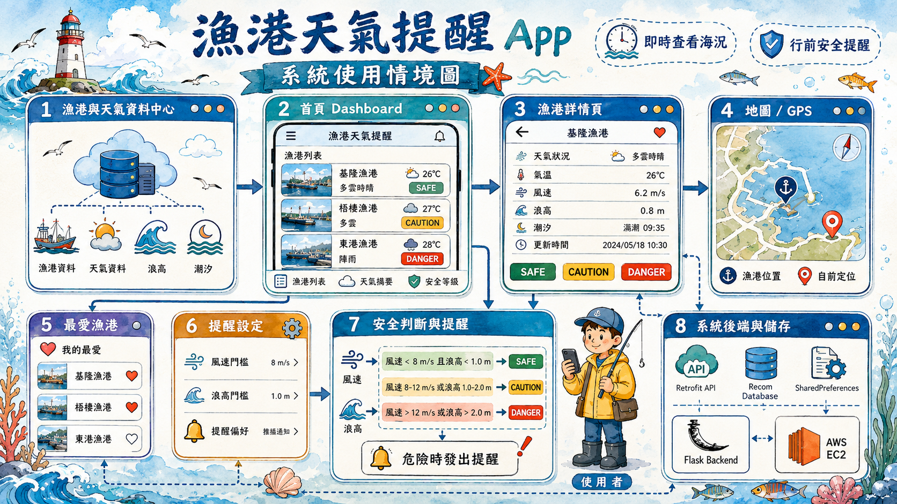

01
漁港總覽
卡片化呈現地點、風速、浪高與安全標籤，適合快速掃描。
為海岸活動做的判斷介面
App 以台灣漁港為核心場景，整合 mock 天氣資料、風浪安全評估、最愛漁港、提醒偏好與地圖定位， 讓展示重點不只停在畫面，而是完整呈現使用情境與技術整合。
Screens
三個畫面對應最重要的使用流程：瀏覽漁港、查看天氣細節、調整個人提醒條件。
卡片化呈現地點、風速、浪高與安全標籤，適合快速掃描。

將單一漁港的氣象資訊與可用行動集中在同一頁。

用清楚的表單控制風速、浪高與模擬推播偏好。
UX Highlights
設計重點放在「快速理解風險」與「能立即採取行動」。使用者不需要自行解讀風速、浪高與天候資料， App 會把資料整理成明確狀態，並把下一步操作放在同一個流程中。
安全、注意、危險三種狀態用明確色彩與文字呈現，讓使用者不用比對數值也能先掌握風險。
以台灣代表漁港作為入口，從地點列表、單港細節到地圖定位，貼近實際查詢情境。
Weather API key 空白時會使用 mock data fallback，課堂 demo、簡報與離線展示都能穩定呈現。
Room 與 SharedPreferences 保存漁港資料、最愛清單與提醒偏好，支撐可延續的個人化使用。
User Flow
展示頁補上完整使用情境，讓觀看者能理解 App 不只是資料列表，而是一條面向海岸活動的決策流程。
首頁列出台灣代表漁港，卡片中直接呈現縣市、簡介、風速、浪高、天氣與安全標籤。 使用者能先找出安全或需要注意的地點。
點進港口後，頁面集中顯示溫度、風速、浪高、降雨機率、潮汐與資料更新時間， 並用狀態條說明目前風浪是否穩定。
使用者可以把常去漁港加入最愛，也能從詳細頁跳到 Google Map 位置， 把天氣判斷與實際路線規劃接在一起。
在設定頁調整最大風速、最大浪高與模擬推播偏好。當漁港達到危險條件時， App 可用 AlertDialog 提醒使用者降低風險。
Evaluation Logic
App 的核心是把風速與浪高轉成安全等級：低風速與低浪高顯示安全；中等風浪顯示注意； 若風速或浪高超過門檻，則標示危險。這種設計讓使用者先看到結論，再視需求閱讀細節。
適合一般岸邊活動，使用綠色標籤建立安心感。
提醒使用者留意天候變化，避免把中等風險誤判成安全。
用紅色狀態與警示對話框強化危險訊號，讓決策更即時。
Presentation Notes
把海象資料整理成可行動的安全判斷，降低一般使用者閱讀氣象數據的門檻。
包含首頁列表、詳細頁、地圖、提醒設定、最愛與本機資料儲存，流程比單純展示頁更完整。
整合 Android UI、Room、Retrofit、Google Maps/GPS 與 Flask backend，可說明前後端與資料層設計。
Architecture
專案使用 Java 與 XML Layout 建構 Android 介面，搭配 RecyclerView、Room、Retrofit、Google Maps/GPS 與 Flask backend。展示網站保留這張系統圖，讓作品頁可以同時說明視覺成果與工程結構。
